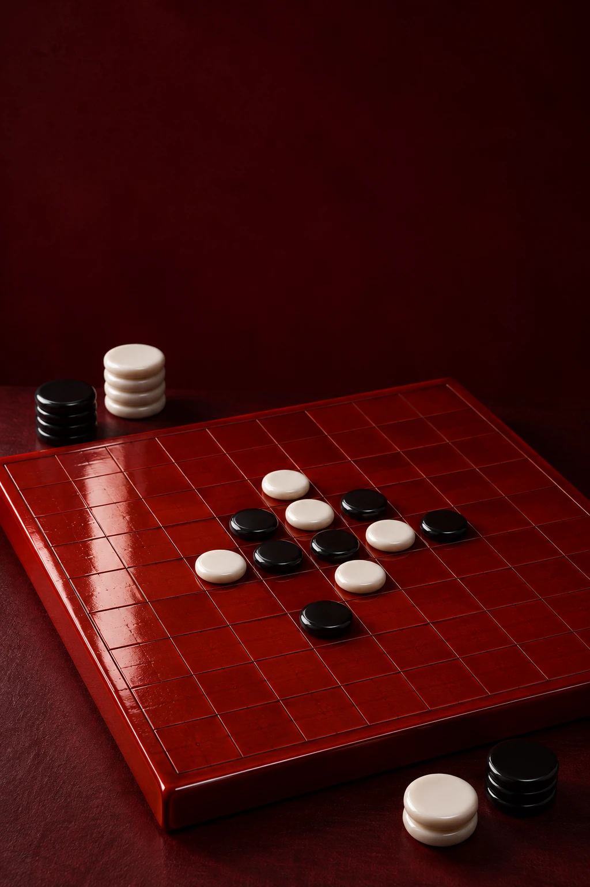

一局・六十四格
赤漆棋室
翻轉之間，重新看見局勢。
你執黑先行。把對手棋子夾在兩端，就能翻成自己的顏色。終局棋多者勝。
正在準備專屬棋具
初次入室・玩法與操作
黑先白後，在空格落子，以橫、直或斜線夾住至少一枚對手棋子。所有被夾的棋子都必須翻轉；不能隔空或跳過自己的棋子。
無合法落點時自動讓手；雙方都不能走才終局，可能仍有空格。棋盤角落不會再被翻轉，別只貪眼前的子數。
輕點空格落子。外框方括號是合法位置；「落點」可隱藏。方向鍵移動焦點，Enter／空白鍵落子。可提示、悔棋、暫停及續玩；沒有倒數。
赤漆棋室
墨黑 你02
對弈瓷白 電腦02
第 00 手從中央開始
方括號是可落子處。角落值得好好守住。